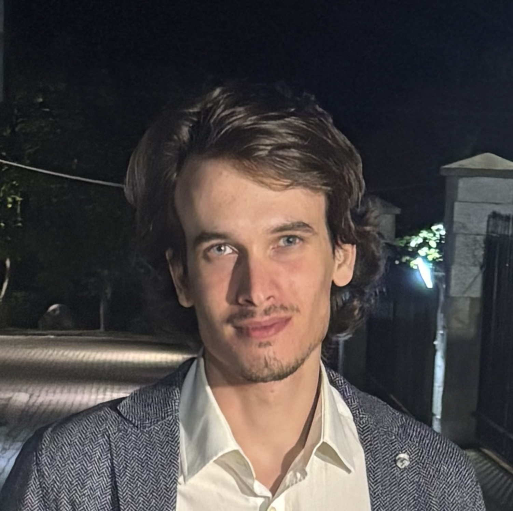

Last CV update:
I am a highly motivated PhD student at the University of Turku with five first-author publications in MNRAS and A&A. My research focuses on X-ray Astrophysics, particularly on X-ray pulsars. I have extensive experience in spectral and timing analyses using data from leading space missions and observatories. My primary goal is to expand my research to include X-ray polarimetric observations of pulsars, aspiring to become a world-leading researcher or professor in the field of high-energy astrophysics.